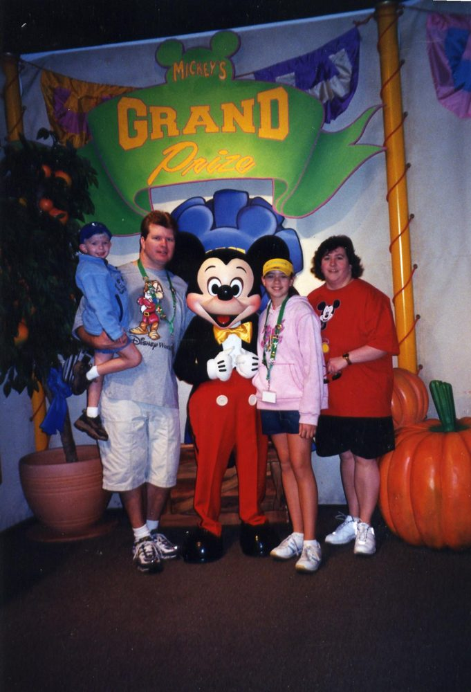
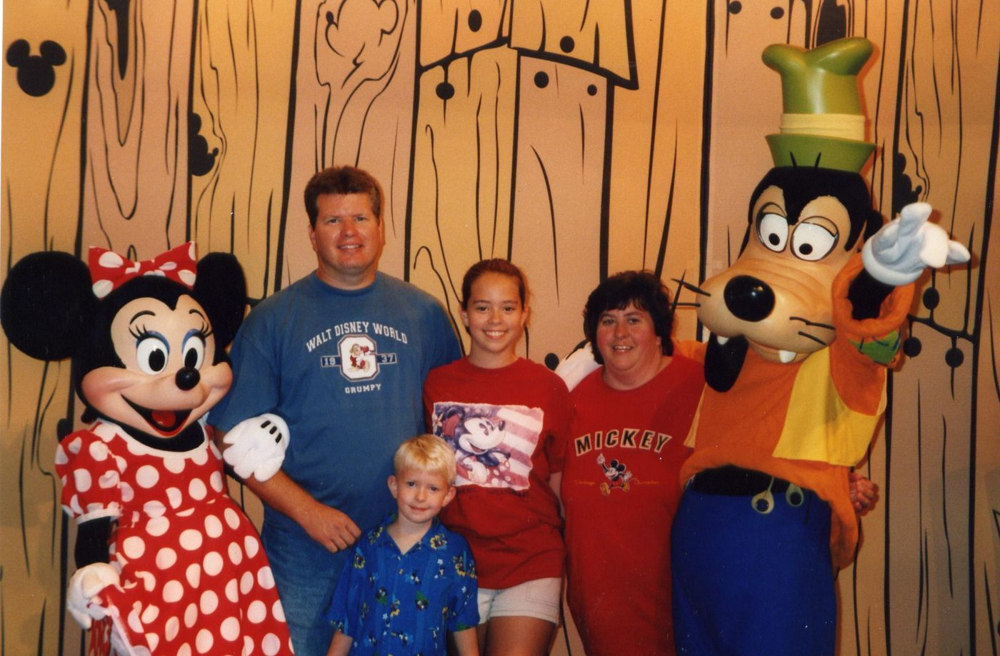
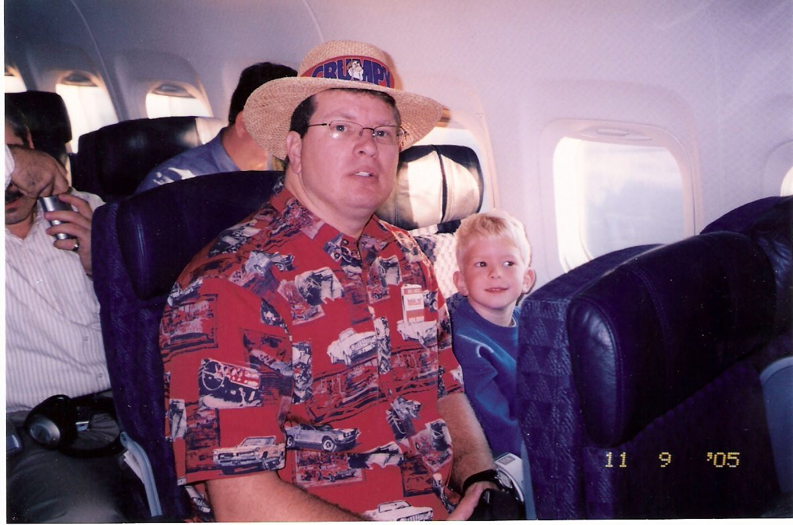
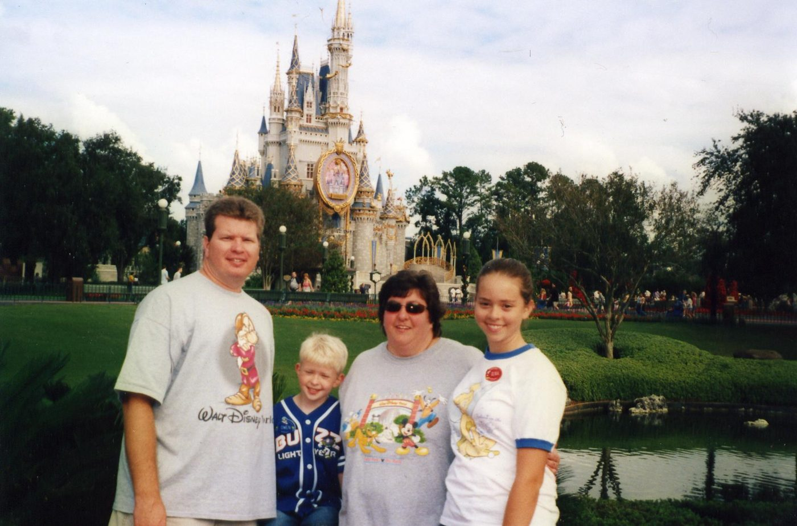
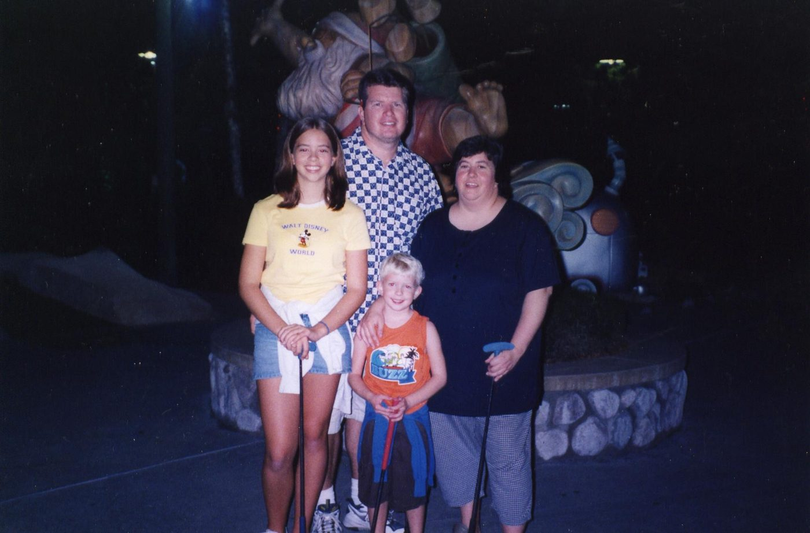

Florida/Disney trip Nov. 04 Cast: Lisa 34 Alan 35 Olivia 14 Owen 5 Mom & Dad for the 1st w
Source: 2004 Florida and Disney trip Nov.doc
Florida/Disney trip Nov. 04 Cast: Lisa 34 Alan 35 Olivia 14 Owen 5 Mom & Dad for the 1st week.
On this trip Alan had to take a class in Tampa for one week and we invited mom and dad to come down with us. Surprisingly (and I don’t mean that in a bad way) they said yes. They don’t usually do “different” things they really like to find one place they like and go back, knowing what to expect. So I did feel some worry that they wouldn’t like it or have any fun. Alan would be in school Mon.-Fri. from 8-5 and we weren’t staying close to the school so he had a 30 minute drive or so. Turned out it was more like 45-60 with traffic. Of course, we would have loved to stay over by the beach but that would have probably added another hour more to his drive so in trying to be nice I didn’t make him do that! The only reason we chose the place we stayed was based of the fact that it had 2 bedrooms and 2 baths. Mostly the 2 bedrooms though. It was a condo/apartment style place located right beside the Tampa airport called Mainsail Suites. Not a great neighborhood really but the place was nice and was mostly all business travelers and airline employees and had security gates to get in and out. They could have heated the pool though! Very pretty pool area but not warm enough water.
Dates of travel: Mom and dad left on Friday Oct. 29th to drive down to St. George island in the Florida panhandle for 1 night and to break up their long drive to tampa. We were flying down on Sat. Oct. 30th. The night before was trick or treat so luckily the kids didn’t miss out on that. We would be flying into tampa and then driving down to Sanibel for sat. night and part of Sunday and then meeting mom and dad in tampa on Sunday in the early evening. So they leave home Friday and we won’t be seeing them again until Sunday evening. That is the plan. They will leave tampa for the long drive home on Sat. Nov. 6th and we will leave to head over to Disney for a week on that same day.
Sat. Oct. 30th
We had a busy night the evening before passing out candy here at home while finishing the packing and loading the rental car that we were driving to the airport. Olivia had a school dance so she was busy too! So we were up early on Sat. as we had a lot to do before we leave at about 10am. We got everything done and took Olfy dog to the vets for boarding. Then we left to drive to St. Louis, the kids were so wound up and bored for that 2 hour ride!
We turned in the rental car and took the shuttle to the airport. Everything went fine except that one of our suitcases was over the 50lb. weight limit! I had told Alan for 2 days that it was too heavy and he said it would be fine! Well I was right and it was not fine! There we were opening 2 suitcases in front of everyone and moving clothes! But not once did I say “I told you so!!” By the way it was only 55lbs. and they wouldn’t let it go by! Alan says just depends who waits on you.
Off to eat bad Chinese food and burger king! This cost us $22.00!! I don’t know how as I was the one sitting and holding the table while watching all the carryon stuff while they ordered. But I thought that was a little high! Even for airport food. Plus that is not even counting the $4.00 that we spend to get a cinnabon for lib! She LOVES those things!!
We arrived in Tampa on time and went out to get the rental car. This is ALWAYS the worst part of every trip we take! Trying to get all our stuff in a full size car! Now when we flew down in Jan. and had a full size at an amazing rate! Even the employee said it was a great price! But we had a huge battle trying to get it all in and Olivia had a fit at the thought that she was going to have to ride with a duffle bag on her lap all the way from Tampa to Orlando! She acted as if we had planned it this way just to tick her off! When we finally told her it was that or be strapped to the roof she got in put it on her lap, leaned over it like a pillow and fell asleep for the whole ride. But I swore then that I would never start and finish another vacation in a full size car! It puts us off in a bad mood trying to load it and ends the trip on a bad note trying to get even more then we came down with back to the airport! HOWEVER, since this 1st week was a business trip and the company was paying for the rental car and they have a rule of nothing bigger then a full size I had no choice. We tried one car in the full size lot and it didn’t work so we tried another and got it all in barely. As we exit the airport parking lot and get onto the interstate to take us down to Sanibel we hear Owen say from the backseat that his throat hurts just before he falls asleep! Alan and I exchange the look of doom!!!!!
Ok, I will be the 1st to admit that I planned this trip and that even I make mistakes! (rarely) But this whole drive to Sanibel was one of them. Alan likes to look for shells and since his only day off all week was Sunday I thought why not drive down there and even though we won’t be arriving till late we will wake up and have the whole morning and afternoon at the beach. We used our holiday inn points for one nights stay right on the beach. And maybe had Owen not gotten sick it would have all been fine but I just think that 2 hours of driving to the airport then an hour and a half in the airport then 2 hours on the plane then 4 more hours of driving was ….well……….. stupid!! Now in my own defense I explained this whole plan to Alan while planning it and he was fine with it but after we saw our 1st sign on the interstate letting us know how many more miles we had he was not happy! He also acted shocked by this new information! This kind of ticked me off since I always try to get him involved in the planning of trips but he always ignores me!! He claimed to have no idea that it was that far away!
We saw a lot of hurricane damage as we drove. We had planned to stop and eat but Owen was still sleeping so we thought we’d just stop after he wakes up. Meanwhile we somehow miss our exit. I think it was because there were several exits for ft. myers and I really thought there would be more signs or info for Sanibel. So we finally get the right exit and Owen is awake. We stop and eat at a Perkins where Owen just lays down in the booth and refuses to eat as he doesn’t feel good. Let’s not forget we haven’t even unpacked the car yet! Dinner was about $20.00 then we ran into the Walmart next door and buy some of that Zicam stuff to shorten the length of colds and such. And Owen got a rescue hero animal for $5.00.
We finish the drive out to Sanibel and unfortunately it was dark so not too interesting. Got checked in and it is 9pm now. We walked outside to see the pool area and Olivia FREAKED out when she saw the pond that had a sign reading DON’T FEED THE ALLIGATORS! She just couldn’t believe that and wanted to be locked tightly into the room till morning. She said that she couldn’t believe that we were that bad of parents that would have taken innocent children outside if there were alligators out there. So back into the room and watched tv for a bit. Owen is acting a lot better but that soon will change! Lights out but I couldn’t sleep. It was such a long day and except for Owen getting sick it went just like I had planned but it was a VERY long day and we hadn’t done anything yet but travel. And I was really hoping that Owen would get better FAST and that we would have some fun tomorrow. Plus I hate sleeping in a double bed with Olivia she is a wild sleeper!
Sunday Oct. 31st
Alan and I were awake and he was anxious to go look for shells so he got dressed and went down to the beach. I stayed behind getting myself ready and I made lib get ready too. Owen finally woke up and we went down to the beach. Alan was not happy he hadn’t found anything. Well that isn’t exactly true he had found as few really big live shells but nothing that he could keep. It was low tide and so there was a bit of a sand bar and Alan and Owen walked out there and looked for about 30 minutes while lib and I sat in the sun on some lounge chairs and video taped. It was chilly out since it was still early and Owens nose was running pretty bad so we gave up and went to the hotel restaurant for breakfast. It was pretty crappy as the menu didn’t have many choices and the service wasn’t the best. But there also wasn’t anywhere else to eat either. It cost about $20.00 and that was with Owen eating free but he also didn’t really eat anything as his throat still hurt. We loaded into the car to go drove down to some other beach areas and check out the shells there. Also nothing!! DARN!! So back to the holiday inn and we spent some time at the pool which was a little chilly. It might have been fine later in the day when it got warmer but it was about 11am. Owen decided he was hungry and we ordered a hot dog and chips from the pool bar. He ate it all up. We walked the beach a little more and also played some ping pong outside by the beach. Eventually we checked out earlier then the grand plan had us checking out but we were there for the shells and there were none and it was really too cold for swimming.
We drove and the kids slept. Stopped in Sarasota at a Walmart and ate at Mcdonalds around 2:30-3:00. We got to Tampa about 4:45 mom and dad had a terrible time trying to find the place and we did make a wrong turn but they REALLY had a hard time! So we meet up with them and they weren’t in the best of moods since they had been driving in circles. Mom said she was ready to just turn around and go home! Great I am thinking this is not looking good! We get the room and thank God it wasn’t a dump! I had been worried! Everyone but mom walked down to look at the pool. Alan and I left with mom’s grocery list and went to walmart. I spent $19 and mom’s was $13. On our way back we stopped to fill up the car with gas as it was already on empty! And we ordered some little ceasers pizza to take back to the room. We didn’t get back to the room till 8:15!! Dad ate pizza with us but mom had already gone to bed. Watched desperate housewives and then Alan and Owen to bed 1st while lib and I watched more tv. Then we went to bed too. Lib is sleeping on a twin air mattress on the living room floor as it is 2 doubles in each bedroom and I am NOT sleeping with her again! By the way…….. once again I was awake till 1:30 couldn’t sleep. And I had to ask myself again tonight …….Are we having fun YET?!?!
Monday Nov.1st
Woke up at 6:10 when mom got up and came to shut our bedroom door. Then Alan got up at 6:30 and I went over and got into his bed since I had been sleeping with Owen and he also was driving me crazy! Well about 5 minutes later Owen who had been sound asleep came over and got into my new bed and curled up and went to sleep again! Jeez! I can’t get away from this kid! Finally at 7:30 Owen was awake again and I gave up and got up! Not getting much sleep on this vacation and I’m not even at Disney yet. Olivia had gotten up from the living room air mattress and went in and slept in mom’s bed at 6am once she was up! Then she was up for good at 8:15. So it was a major round of musical beds. We had breakfast and left about 9:30am for Caladesi Island. Got there and took the 10:00 ferry boat over. This was not cheap I think about $8.00 per adult. Mom and dad paid for us but not cheap. WELL HERE IS WHERE ALL THE SHELLS WERE!! I felt pretty bad now! Alan is off at class all day and on his day off I made him drive 3- 4 hours each way to hunt for shells that weren’t even there but right here we found TONS of them. And they were big ones too. We even thought about not telling him. Of course we did though and he acted like he didn’t even care! Ha! I know better! We stayed on the island till the 12:30 ferry then headed back toward the room stopping for lunch at a Wendy’s drive through. Ate the lunch in the room then went down to the pool for an hour. We all swam but it was chilly! Then mom and dad left to go to TJ Maxx and a dollar store. I watched my soap (GH!) and Owen watched cartoons in one of the bedrooms while lib did homework in the other one for about an hour.
Alan didn’t get back from school till 6pm. We were all dressed and waiting outside for him so we could go out to dinner! We took 2 cars and mom and dad followed us. This was once again my stupid plan but I looked up online and told Alan that there is a Joe’s crab shack ( his favorite place!) well guess what??? I was wrong. I had printed out a map and had the address of it and everything! Well it turned out that I don’t read very carefully and it was a Landry’s or something that is from the same owners of Joe’s! Soooooooooo Alan went in and asked if there was a Joes’ around and we managed to find it eventually! But it took forever to find and I was worried my parents weren’t having any fun following us around in circles late in the evening way later then there usual dinner time and in a big city!
We had a free kid’s meal coupon for Owen’s dinner and mom paid for lib’s so since Alan was on business we only paid for mine which was about $15.00. After dinner we went over to Target (the men) and Catherines (the girls). Then back to the room at 9 pm.
Tuesday Nov. 2nd
I took at Tylenol PM last night so I finally slept good for the 1st time in 5 days! Owen and I got up around 8:30 am and I called the Dr. back home to ask for some medicine for Owen. He had just gotten over pneumonia a few weeks before we left for the trip. I didn’t get to talk to the Dr. just the nurse and she took the number for the walgreens down the road and said the Dr. would call him something in later that afternoon.
We all got ready and drove down to Fort De Soto state park. Arrived about 11am and looked for shells not much but a very nice area. The kids played in the surf and mom and dad walked the beach. Well I did too just not as long as they did. We saw a 70ish year old man in a THONG! Almost died laughing at that! There were several barely dressed older people there. We had brought a picnic lunch so we went to the playground area and ate under a pavilion and then the kids played for awhile. We left about 1:30 and got to the room about 45 minutes later. Back down to the pool and stayed about an hour again but Owen didn’t want to get in he wasn’t feeling well. Mom and I left to go get the medicine from walgreens and it was just cough syrup! Well even I knew that wasn’t going to do it! That stuff just never works on him plus he doesn’t just get a little sick he gets VERY sick! And he was! Mom and I also stopped at the TJ MAXX looking for a one piece swimsuit for lib as she only had a 2 piece it is a modest one though) and I thought she should wear a one piece for the water parks. They had none! I was told that swimsuit season is over! Well now come on people I know it is November but it is FLORIDA! I did find her a cute Roxy sweatshirt on clearance which she wore at least for a few hours almost every day for a week. And slept in too! She’s always cold!
At walgreens it took forever to get the cough crap! It was $48.00!! But my ins. Card made it $10.00 only thing was they were having problems with the card. I think it was user error! Because as soon as a woman took over for this guy who couldn’t get it to work well what do you know it worked! Idiot!
There was a baskin robbins next door so we had to get some of that! And then we made our way back in this horrible 5:00 rush hour traffic! It was bad. At one point some teenagers made mom mad and she flipped them the bird and was yelling at them some very foul language!! I thought they were going to come back and shoot us! Funny but scary! Luckily no children were with us as that could have warped them! It would have made quite a memory of there dear grandma!
Back to the room and Alan got there at 6 again so we went over to the international plaza mall that is on the other side of the airport. This was not a mall for us. It was Coach, Saks, and well actually I can’t even think of the other places but they were all so expensive that they won’t even come into my mind right now! Our main reason for going though was the Cheesecake Factory! We don’t have one of these anywhere near us and none of us had eaten at one. (well I think Alan may have on a business trip) Mom REALLY wanted to go here. Alan had the expensive steak (business acct!) I had the cheaper chicken (quote from Father of the bride movie!) they don’t have kids meals! So dad and lib split and hamburger (it was huge!) and owen had a grilled cheese from the regular menu which was like $7-8 or something! I can’t believe they don’t have kids meals. I have decided to never eat at another cheesecake factory because of that! Kids or no kids I think that is wrong. Well or maybe I’ll just never eat there again with kids along! I guess they just don’t want people to bring there kids in and that is how they let you know!? Anyway mom had some other chicken with peppers and onions (low carbing ) and she liked it. My chicken was just ok but huge! 3 people could have ate that. Owen fell asleep before the food arrived so there went that $7-8.00. Alan also ordered an eggroll appetizer for us to all share it was very spicy but dad and alan liked it. Now time for dessert! Alan got caramel cheesecake, lib and I shared the fresh strawberry and mom and dad got an ice cream sundae to share!!!!!!!!!!! WAIT A MINITE! My mom is the reason we came here to eat she wanted the cheesecake and she ordered a sundae to share! I don’t know but we couldn’t figure her out. (by the way since we have been home she has talked of driving 2 hours to st. louis to eat there again?) Anyway mine and Owens came to $30.00

Back to the room at 8:30ish and Alan and Lib played volleyball at the sand area they have. Dad, Owen, and I watched. Mom went to bed I think. They were very funny to watch because well lib is just funny and not athletic (sorry lib!) She is also very loud and vocal! Dad and I were cracking up! We also joined them for a bit but didn’t last long. Then Owen and I went with Alan down to the lobby building so he could have internet access to check his work email. Then back to room and to bed.
At 2:30 am Owen woke me up and said that he couldn’t breathe and felt like he was going to puke! We sat in the bathroom for 30 minutes and he never did puke. Then we went back to sleep. He just kept saying it hurt to breathe! This is not good.
Wednesday Nov. 3rd
The original plan for today was for all of us (minus Alan) to drive to Orlando and go to Typhoon Lagoon today. I had several old park hoppers with plusses on them and every time we buy another hopper we get them but our last 2 trips have been in Jan. and we just haven’t used them up. I was really looking forward to this. This was as close to going to Disney World as I would ever get my parents! They just don’t “get” it! And don’t care to either. This is fine with me, especially since they have stopped making me feel bad for liking it.
But Owen was way too sick for a water park. So I got up early at 7am to let them know that Owen was too sick to go along. I went back and laid in bed with Owen so he would stay asleep as he can tell when there isn’t a warm body next to him and wakes right up. I dozed off a little and about 8ish he rolled out of bed and hurt his lower back. So know he is defiantly awake! Poor little guy. Mom had looked up a pediatrician in the phone book and I called to see if they could see him. I just hated the idea of going to the emergency room and being there forever! But he is still saying it hurts when he breathes. So I called and these were the nicest people ever! They gave me an 11am appt. Jeez I can’t even get in that fast at our Dr. at home. I was already impressed. They also gave me good directions too. Once we got there the Dr./nurses gave Owen breathing treatments with the machine ( we have one of these at home by the way!!) he did 3 all together every 20 minutes or so. They had to wake him up to do it as he kept falling asleep between them! The Dr. came in and listened to him between each one. Then he told me Owen has pneumonia and asthma!! Basically he said, I don’t want to step on the toes of your reg. Dr. but I think he has asthma! Well long story a little shorter he gave us prescriptions for steroid for the asthma, antibiotic for the pneumonia and an inhaler! He also stayed threw his lunch hour and sent his office staff to lunch but stayed to take care of Owen. So when it was time to pay he said I don’t know how to do all this paper work stuff and they are gone to lunch so we will just bill you.!! I now want to move to Tampa just so he can be our Dr. (did I also mention he looked like a surfer dude?)
Now the 2 hours we were there my parents and lib were in the waiting room bored. They did walk next door to burger king for lunch. Once the Dr. let us leave he made us go get an xray because he wanted to check how bad the pneumonia was even though he wasn’t putting him in the hospital now he said he wanted the xray for his peace of mind. So we went down the road and found that place and waited forever to get the xray. Dr. told me he would call around 5pm and he would tell me what it looked like. So now off to walgreens ( $54.00 WITH prescription card) and another stop at wendy’s for me and Owen then back to the room! Whew what a day. Owen acts a hundred times better already just from the breathing machine treatments, sounds bad though. Owen went to bed and slept, lib is doing homework. Too bad she didn’t have that with her at the Dr.’s office huh! Mom and dad were napping and watching TV. The phone rang at 5:30 and woke Owen up it was the Dr. he said that the xray showed NO pneumonia! He was very VERY surprised by that and he said that it makes him even more positive that he has asthma. He told me to go ahead and give him the antibiotic that was for the pneumonia as it wouldn’t hurt and would just help him feel better faster. He also said that if he isn’t showing any signs of acting better by tomorrow then to bring him back for more breathing treatments. No he won’t be completely better but we should notice a difference! What a very nice Dr. and unlike the Dr.’s we are used to he acted like he really cared! (by the way we eventually got the bill and it was about $250.00 but our ins. Took care of most of it. And he made him better which we great!)
Alan got back at 6pm and missed our fun day. He had called moms cell on his lunch break and she had filled him in on what was going on so far but she didn’t really know much then as she was waiting in the waiting room. He also called and talked to me on his drive home that day so he was mostly filled in by the time he got to the condo.
Mom and dad felt they needed to get out and do something as they had all just sat around all day so they took lib and went back to the mall that we can’t afford and were just going to eat at the food court and walk the mall a bit. Alan went to the lobby building where they have a bar and ordered us each a sandwich and was going to check his work email while he waited for the food. Well 45 minutes later he finally came back with the 2 sandwiches! We don’t know what took them so long to make as they were just cold sandwiches! Good ones though. I had cooked Owen a hot dog in the room. We watched Lost on TV while Owen watched a DVD on Alan’s laptop in the bedroom.
When they all came back from dinner they had brought us all cheesecake! 3 pieces which we had asked for if they went there but she wouldn’t take any money for it! Everyone watched a little TV then went to bed except for lib and I stayed up and watched another episode of Desperate Housewives that they were playing again.
Thurs. Nov. 4th
The plan for today was that mom and dad would take Lib and go to typhoon lagoon! This was killing me that they were going to Disney without me! But the night before I had given them directions over and over and had also given lib some pointers as she is very Disney savvy and knows you must always have a plan! They left the condo at 8:30am and called at 10 saying they were already just inside the park and they didn’t have any trouble finding it! I was thrilled for them ….. really I was! Owen and I just hung out and watched tv till 11:30 then went down the lobby building to do some laundry. I had thought that we would have a washer and dryer in the room as online it shows the room layout and pictures one! But when we got to the room there was just the closet doors where the washer and dryer used to be. So we loaded the washer then sat out by the pool in the sunshine for awhile but got very hot! I don’t know why as it is too chilly to swim but we got hot and went for a walk all around the condo area. Laundry ended up costing $7.00 as it stole $2.00 of quarters from me!! I probably should have just packed enough and not worried about washing. That is what I always do but I thought 2 weeks would be way too much laundry! Plus it’s not like Owen and I had anything else going on today.
Back to the room about 1:00 and as I am fixing our lunch I remember that there was another bag that we had been sticking dirty clothes in! I was not happy about this as the loads I did were not that big and these clothes would have fit right in! Jeez. Owen watched cartoons while I watched my soap and packed up some of the things that we knew we were done with like some of that laundry which was Alan’s dressier shirts and just some other junk that we had. I tried separating things that would go on to Orlando or things I was sending home with mom. At 2pm I laid down in bed with Owen to get him to fall asleep then after he did I snuck out of the bedroom. Alan called to check in on Owen. I was thinking of mom and dad and I hoped they were having fun! I knew lib would be! And they ended up picking the warmest day we’ve had all week so that was good.
They got back at 5pm. Dad and lib had fun but I don’t think mom did. She didn’t like the wave pool it was too strong for her. Also didn’t like the lazy river as she couldn’t seem get herself into an inner tube. So she just sat and people watched all day. Dad and lib did the shark thing, family raft ride, I think and the wave pool but they didn’t even see the big slides!! Now I don’t think dad would have done them but they didn’t even SEE them?!?! For lunch dad and lib had split a personal pizza and also bought a turkey leg as mom and dad had seen these on the food channel show. They had also taken a small soft sided cooler with mom’s lunch and with water and soda. They said traffic was horrible. There was construction on the interstate but I think the horrible part was the traffic around Tampa.
At 5:30 the Dr. called to check on Owen!! He had said to bring him back in if he wasn’t showing any improvement but he really was so we didn’t take him in. Well the Dr. called to double check on him. He was happy to hear he was doing much better. Also the 2 days of rest has helped him I am sure.
Mom was starved since all she had eaten was a salad for lunch so her and dad left to go out and eat. While they were gone we walked over to the sand volleyball again and lib and Alan played while Owen sat and he ate a sandwich and watched them. When they got back Alan, lib and I went out to eat leaving Owen with mom and dad. We went to an Applebee’s just down the road. We had the steak and shrimp combo and lib had a kids meal. Alan ordered an appetizer of cheese sticks for lib too. He also ordered some kind of warm apple thing filled with cream cheese! That thing was VERY good. We all 3 shared it. The bill for lib and I was about $15-20ish.
Once we ate we went to find beer for dad and an ATM for mom. We ended up at a grocery store but her ATM card wouldn’t work in the machine because it had a scratch on it. I bought dad’s beer and we went back to the room about 8:30. Mom was in bed already and dad went right at 9pm. I think they were worn out from there water park day! The rest of us went at 10pm.
Friday Nov. 5th
Up at 8am, mom and dad said they weren’t staying for Sat. night. Alan could get the condo paid for on Saturday night also but we were leaving on Sat. morning for Disney. We told them they could stay and hang out though and it would be free. But I had a pretty good feeling they wouldn’t do it. They wanted to get started driving home. I also don’t think they are having a lot of fun what with Owen being sick and the constant amounts of traffic in the area! So today is their last day here and they are going to go back to take the ferry over to Caladesi island to the beach again. It is cooler out today and windy. I think a high of 75 and it was 80-85 all week. Plus the wind made it feel cooler too. When they left this morning it was only 65 out!
I would have liked to have gone too but I really didn’t think Owen should be out in the wind and was trying to get him well before we got to Orlando. Olivia had a lot of home work to finish up also so we stayed behind. Lib worked on homework all day. She is wanting to be able to send those big school books home with grandma so we don’t have to take them home on the plane. Well she ended up doing homework from 10:30-6:00pm! Not completely nonstop but close to it! She stopped and ate lunch and watched general hospital with me and then worked some more.
I did one more load of laundry and we sat down by the pool in the sun and Owen and I took a walk around the condo area. . At 1pm I fixed us hot dogs for lunch and we ate some of the stuff left in the fridge. Around 2 I laid down with Owen to get him to fall asleep and it worked! He slept till 3:30 when mom and dad came back. It turns out that they had changed there minds and decided not to go to the beach as it was too windy and cool or something not sure why really? So they went shopping instead! They went to Wal-mart, Target, and a mall. They had bought Owen the shrek dvd and bought lib the new NOW 17 cd both of them had just been released this week.
We all hung out at the condo for awhile and dad took Owen for a walk chasing the lizards. He was so happy that he caught one! Then set it free of course. Once Alan got home we left to go out and eat at Crabby Bills. We have eaten at the original one a few years ago and lib just loved it! (so did I) And we have been told that the original is the best but it was a long drive away so we went to the one much closer to us. We were seated at a big picnic table inside because it was too cool and windy outside but they had all the doors open and we nearly froze to death! Alan had to go out and get a beach towel out of mom’s van for the kids. Our waitress was an idiot. There really is no other word for it she was a total ding bat! Alan had ordered a huge appetizer for him and dad (and us too) to share and it came out WITH our meal and it was COLD! We had to send it back and then it came out hot fresh and FAST! Now why couldn’t they have done that to begin with! Mom and dad just split 2 appetizers for their meal. They had onion rings and wings because mom doesn’t like seafood. Plus dad ate the seafood appetizer. Mom paid for my meal and the kid’s too. I think it was about $37 total. We had a $5.00 off coupon off the crabby bill website but they wouldn’t accept it because they said they weren’t affiliated with them!??!?! We didn’t understand that at all! Crabbybills.com and there location is listed on that website and there name is crabby bills but not affiliated??? Just dumb!
Back to the room about 8:30 and sat around and talked with mom and dad for about an hour then they went to bed and Alan studied for his test he had in the morning. Also there were some people who moved in above us today that had a large group of teenagers and they were VERY loud! It truly sounded like they were wrestling upstairs above us. I have never stayed any place and had people that rowdy above us. Alan of course slept right threw it! I was wanting him to call and pitch a fit but he was just snoring away and so were the kids! So I just laid there staring at the ceiling wishing evil things upon them. (the neighbors, not my family!) I also vowed to get up early and make a lot of noise but of course I didn’t do it.
Saturday Nov. 6th
Our DISNEY DAY!!!!!!!!!!! WOOHOO!!! All the planning, all the waiting and finally it is here! I felt bad to be so excited and yet mom and dad’s part of the trip was over and they had to drive home! (they should have flown! Plus we were right by the airport!!)

Alan had gotten up at 5:45 as he had to be to school really early today for the test. We had no idea how long it would take but we knew it would be over by noon. And once he got back we were leaving for Orlando.
When Owen and I got up at 7:30 mom and dad were packing up and I must say that I was very surprised to see they were even still around! They are very early risers and like to get an early start when they travel so I thought they would have left by 5am! There was this one trip years ago when we were driving to Florida to the beach for summer vacation. Well we had stopped at a motel along the interstate for the night and the next thing I know they are waking me up and making us leave to get on the road at 2AM!!!!!!!!! Crazy! And I always joke that because of that I don’t travel with them anymore.
So I was surprised to see them but they loaded up we said our goodbyes and they left at 8:30am. At 9:30 Alan called and said that he should be back to the room and ready to go by 10am!!!!!!!!!! So I put it into high gear and started cleaning out the fridge and finished packing everything up. Getting all of our crap into that full size car was again as always a vacation tradition with us and a pain in the butt! Almost a bit of a contest as the years have gone by kind of like “ bet you can’t” and then Alan takes that as a challenge and before we know it we are stuffed so tight in that car that I can’t see either kid and can’t feel my legs! Ahhhh, good times, good times! Alan of course being the driver is no worse for the wear and has the same amount of space no matter what.
Left the condo at 10:20 (not that I was counting!) and I was very impressed that we were ahead of schedule! As we drove along out of Tampa I began to ponder all the great things we could do in Orlando with our extra and unexpected 2 whole hours! Next thing I know about half way there we are rolling along at about 10-15mph!! This went on for about 45minutes!! At times we didn’t even move at all! So now I am telling myself not to panic as at least we are not behind schedule and I erased all those plans I had just made in my head for that extra 2 hours! As we crawled along stuffed into that car with all of our luggage the kids started to get ticked since we had promised them we would be there in no time and they wouldn’t have to be squashed for long. Eventually, we found out it had been either a small wreck or a stalled car I actually can’t remember which right now but it wasn’t anything serious big. And finally we picked up speed and before we knew it we were exiting onto Disney property and pulling up to the Pop Century! We rolled out of the car and walked slowly in as we had to regain some of the feeling in our legs before we could move too fast!
The line to check in wasn’t nearly as long as it had been in Jan. when we checked in on the day before the Disney Marathon! We were given a room in the 70’s building which is what we had before and what we wanted again. 4th floor (also wanted!) and room 409. Did I mention that the room was ready? It was only a little after 12 so we were happy! It was down toward the water, in the big wheel building (also same as last time) but this time we were facing out towards the giant Mickey phone! We liked the 70’s building as it isn’t too far from the food court or bus stop even though it is a walk to the pool. Can’t have everything! And since we don’t swim everyday but we do take a bus and visit the main building everyday we like this area.
We have learned since last time and we went and checked out a cart and loaded all our crap onto it. Went to the room and unpacked a few things but not everything. As soon as we had all took turns using the bathroom we headed out. But no not to the parks, we only had the rental car till this afternoon and so we headed offsite for some outlet shopping. A quick stop to the chick-fil-a ($11.00) and then over to the big outlet mall just past little lake bryan area. Since we knew that this was the only trip to the outlets and since that is where we always buy our souvenirs we all picked out something. Alan and I got matching t-shirts, Al also got a cheap grumpy t-shirt, a buzz shirt for Owen, some shorts for lib that said dance and WDW on them, 2 coffee mugs one grumpy one for Alan and a Donald for his co- worker who loves Donald. The mugs were only $2.99. Owen got some fancy candy with a dispenser, a large pen for autographs, and 2 trading pins. Also got 2 light up spinning mickey things for $1.99 each one for Owen and one for the neighbor girl. Total spent was $84.00! Well since I had budgeted $100.00 for souvenirs I guess that was ok but we never usually spend that much at once…….. ever!! Usually we spend $30- 40ish at the outlets at the beginning of our stay then maybe another $30-40ish at the end. Plus we also go to several outlets stores to shop and might spend another $10 here or there. But the car had to be back soon and we know we can get a lot more stuff for a lot less at the outlet and then we are done. Never buy anything at the Disney shops unless it is just the kids’s stuff with their money.
We went down the road to a crappier outlet store and found the same fat pen for $1.00 less! Lib got a Minnie eraser thing for $1.99 and we bought a Spiderman pool football for $1.99 too. Which, we actually played with several times this week.
Then we were off to Publix for supplies. Alan dropped me and the kids off and he went to go fill the rental car up with gas so we could return it. I already had a list made of what I needed so we weren’t in there long. Bought some ham, cheese, chips, cookies, sunny delight mini bottles, orange juice, milk, spent $25.00. Just what I had budgeted for! I was proud of that and the cookies were buy one get one free and the only thing we needed more of this week was we could have used just a little more ham and also just a little more milk. We already had cereal left over from the condo. Alan met us in the store just as we were finishing and it was the fastest grocery stop we have ever made!
We stopped back by the room just to unload the groceries. I should also mention that we had a fridge in the room for Owen’s prescriptions that he was still on. We hadn’t planned on that so we also had a collapsible small cooler on wheels. I was just going to put the medicine in the cooler but while I was in the bathroom when we had 1st checked in Alan called down and asked about the fridge for the medicine and when we got back from our errands it was in the room! By the time we were done with all of this we had to head to DTD to return the rental car. This was very easy to do we just went to the Hilton and while Alan returned it the kids and I went to the restroom when we were done he was done and waiting for us. This hotel is also one of the closer ones to DTD so it was very easy to just walk over there. We looked in the toy store, World of Disney, and home store. We didn’t buy a single thing as we had already spent our money earlier. The kids both still have there money though. We took a bus to the Contemporary for our PS at Chef Mickey’s!! This plan has worked out well as we are all starving and the transportation was very easy. The bus ride took awhile as we had to stop at Westside and Typhoon Lagoon. We got to the hotel at 5:45our PS was for 6:20. There was a HUGE line of people trying to check in for there PS! If you didn’t have one, they were turning you away but I really thought they should have been announcing that out loud to the crowd. There were people who didn’t know any better waiting in this line for at least 20 minutes to see if they could eat only to be told no chance! This was also making the line longer for everyone. If they could have just walked back into the line area and said it was PS only half the people would have left!
We ended up being seating at our exact PS time. This is the busiest I have ever seen chef mickey’s and we have been there about 3-4 times and it has always been busy but the crowd our front tonight was crazy! We ate and ate and it was all good. We took some video of Olivia and all her desserts and Owen with his mound of ice cream and sprinkles. We saw all of the characters and had a very good time. Even though the place was crazy we had a nice time. I think this was because we weren’t exhausted from a long day in the parks. I don’t enjoy this place as much after a day in the parks. Alan’s meal was paid for by work since this was his last day on the expense account! That is why we chose to eat here tonight. I had planned that one out ahead of time! Especially since Olivia is charged as an adult now.
Once we left dinner we had a choice of either walking to the Magic Kingdom to catch a bus back to the hotel or taking the monorail. Owen voted for the monorail so that is what we did. It took awhile since it had several stops but that was ok with us. With staying at Pop Century we never ride the monorail much anymore. On our trip in Jan. we stayed a week and never rode it once! We got to the MK and had to wait about 20 minutes for a bus. Once it came it was standing room only and not everyone got on. I was hoping this was not a sign of things to come later in the week! We got back to the room about 8:30ish and still had to unpack about 80% of our stuff! This took me till 10pm I kid you not and with no help from anyone whatsoever! Alan did refill the cooler with some ice but that took about 5 minutes. His idea of helping me with the packing or unpacking always consists of taking care of the cooler and that is it!! Well I guess he does lug it all to and from the car so that counts for something. Finally in my PJ’s and ready to relax at 10:30 and we had to set a wake up call because we are headed to the parks in the morning!! We set it for an odd time hoping for a Mickey Mouse wake up call and by the way it worked all week long. 7:18am!
Favorites today: Arriving at Pop and room ready, Dinner at Chef Mickey’s, outlet shopping.
Least favorite: Major traffic jam on interstate, waiting in line for 20 minutes just to check in at dinner and with some very angry people too.
Sunday Nov. 7th
Alarm went off at 7:18 and we showered, ate in room, dressed and made it to the bus stop by 8:30. I was very impressed with this! However, they were loading 2 wheelchairs and it took quite awhile as the bus driver didn’t seem to know what he was doing. Arrived at MK and went to enter the park with our passes. Alan and Owen have 4 day hoppers but lib and I have 7 day hoppers. We had used our Marriott points to get one of the 7 day ones for free! We only needed 5 day hops but the amount of Marriott points needed to get the 7 day ones was so small we just went ahead and got those. We then just bought the other 7 day one as we didn’t want to have one pass not have equal number of days as at least one other one. (Made sense to us) Lib and I were going to be using 5 days on this trip as we are going into the parks on our last day for Super Soap and the boys are not. So we will have 2 days left on our hoppers and some plus’s left also. Whereas Alan and Owen will use up all days on there tickets on this trip. We thought this way the 2 passes that are leftover with days remaining will have the same number of days for the future use. Got that? That took some thinking and some planning!
However, upon entering the park neither one of the 7 day hops wanted to work in the thingy. We encountered this almost all week. Once in a great while it would work but usually it didn’t. Never could figure it out though.
We went straight to Buzz for a fast pass then went to drive the race cars as Owen loves these and there is always a line. Even at opening we waited about 10 minutes. After this we went to Philarmagic and Lib and I LOVED it. Alan didn’t really have an opinion but liked it (men!) and Owen didn’t like it as it scared him! This kid is such a wimp. I mean he is a lot like me and I am a ride wimp but what is so scary about Donald Duck and cartoons!! Headed back to Tomarrowland and rode the TTA then used our fast pass for Buzz.
Over to Adventureland because Alan wanted his egg roll! This has started to become a tradition with him. He is always standing around waiting for the egg roll cart to open up. He is not that crazy about egg rolls at home and rarely even eats them when eat at a Chinese buffet but he thinks these are wonderful! (they are good) We waited 10 minutes because they don’t open till 11:00 and we got 2 of them. ($5.00)
Then after we ate them we started our slow walk out of the park. The park was just too busy for us. It was a Sunday and we usually only do the MK on weekdays and it was the end of Jersey week so maybe that added to the crowds but I am not sure. We browsed through some shops on our way out and took the ferry boat to the TTC. We waited about 20 minutes for a bus to Animal Kingdom. We noticed when we got into the park it was exactly noon, one hour from when we were buying those egg rolls. So it does take a little time to park hop.
The kids were hungry now so we went to Pizzafari and had planned on getting the kids meal voucher and using them for pizza’s for us all to share. However, they have since changed that and you could only get PB&J so we didn’t get the vouchers at all. Instead we ordered 3 personal pizza’s and I shared mine with Owen since I had just had an egg roll. Also got 2 large drinks and 2 empty cups to make 4 drinks! Lunch cost about $25.
Also wanted to comment that this place was packed! Whenever we are usually at AK it is so empty and it was odd to see people lined up waiting to order lunch.
I forgot to mention that as we were coming into the park we passed a family heading out and they gave us there fast pass’s for the Safari! YEAH! So as soon as we got done eating we headed right back for our ride. Good ride as always got to see some lions out on the rock! But we are tired of the big Red story line. You can always tell if it is someone’s 1st ride on the safari by the way they react to that story.
From the safari we took the train to Rafiki’s planet or whatever it is called. Not a lot going on over there but Owen liked the petting zoo. If you don’t have little ones who will enjoy the petting zoo then there really is no need to go back there. It was pretty warm out today so I played in the big misting fans that were out there. Then we rode the train back and went to the 3pm flights of wonder show. This is something we had never done before (along with Rafiki’s). It was a cute show and we were also going to go ride Kali River Rapids another new thing to us. We have been to this park every year since it opened but it was always too cold for this. Owen of course wanted no part of this so Lib and I went on 1st and I got soaked!! The ponchos were in the room since it was a hot sunny day! And I was wet all the way down to the bra and undies!! Alan and Owen had found the squirt things at the end of the ride and helped in getting me soaked! The ride was a walk on so Alan took his turn with lib while I waited with Owen and the squirt guns! Of course it didn’t’ matter I was still much wetter then anyone else!
Moving on we went over to Dinoland. Lib loves that dumb Primeval Whirl! I think that she just likes to see me scream like a baby as I am afraid of heights! Truly I do think that my reaction to this ride is her favorite part. We are also used to this ride being a total walk on as our last few trips in Jan. it has been. But today there was a 10 maybe 15 minute wait. We are spoiled I know we are. Her and I rode twice alone and then a young girl about libs age was seated with us and we rode twice with her. She was a very talkative and friendly thing that had pretty much just glued herself to us and I had had my fill of this ride so I told them to carry on without me. Alan and Owen had rode triceratops spin and played some carnival games I think they also hit the playground. I finally found them and Alan had a major migraine headache so we found a bench to wait for Lib and her friend to finish riding. Finally at about 10 minutes till closing (5pm) I told Alan to go ahead of us and walk to the front of the park to 1st aid and get some aspirin as I could tell he was dieing. It was 5:15 by the time lib got off her last ride! I was beginning to wonder about her. Well, her little friend still wouldn’t leave us, she found her family and they walked out of the park together with us. Normally this would be fine but I could tell that lib didn’t care for this girl all that much and was trying to get away from her. She just kept putting her arm around Lib and hanging all over her. Turns out that even though she looked 14 she was only 11!! That was surprising as she was very developed! We also found out she is from Florida over by Tampa as her mom asked her if she had any homework to get done that night when they got home. As we are walking we met up with Alan who had gotten his aspirin and decided that we must be hiding out in the park for the night or something since it is so late so he came back looking for us. We take this chance to stop walking with this girl who won’t leave Lib alone and we buy a popcorn for us all to share. They keep on walking but not before this girl yell’s back to lib about 3-4 more times!! Jeez!

It is now that lib turns on me for leaving her with this girl to ride the ride! I thought that since I had ridden it 4 times and didn’t want to ride anymore that they would enjoy going with out me! Turns out that is not the case and lib just couldn’t think of a nice way to get out of it. Apparently the ride really isn’t as much fun without ME!
We are still making our way out of the park and are probably about the last ones out! But at least there was a bus waiting for us. We went back to the hotel to eat dinner. Alan and I had the mom’s special of fried chicken mashed potatoes and green beans and the kids both had nugget meals. ($32.00) Then Alan went over to the store area and bought some sinus medicine for himself. Well he comes back crying on my shoulder that it is $8.00!! And he doesn’t know if he should get it or not! Well we don’t have a rental car so it is either pay the $8 or suffer. I told him it was his choice. Of course, he went back and bought it. (men!)
Once we got back up to the room he took his medicine and laid down to watch TV so I took the kids to the game room and the pool. After all it was only about 7pm and we were in Disney there is no time for laying around! We had our cover-ups on and went to the game room 1st and as soon as we walked in Lib walked right up to a young “boy” who was working there and started talking to him. I thought this was odd at 1st but then she came flying over to tell me he had one of the tinkerbell pins she had been looking to trade for!! And he was getting off work soon! So off we go back to the room to get her pins and back down to trade with him. We spent our $3.00 in the game room and headed to the pool for about 45 minutes. The water was warm but when we got out the air was cold and don’t forget our room is not near a pool! Back in the room and watched a little tv. To bed at 10pm.
Favorites today: Any time I enter the MK, philarmagic, egg rolls, fast passes given to us for safari, getting soaked on Kali ( it was kind of fun!), game room and swimming with the kids.
Least favorites: Taking forever to get to the MK, crowds at MK, getting soaked on Kali (even though it was fun it was also awful!), Alan’s bad headache/sinus problem, and I guess for Lib it would be me ditching her and leaving her with the crazy girl! (even though I thought I was doing a good thing?!?)
Monday Nov. 8th
Alarm again went off at 7:18 and we again managed to do the whole shower, dress, eat in room and get to the bus stop by 8:30. But it sure is a speedy race to make it in that amount of time! This time we got on a waiting bus and 10 minutes later were at MGM before opening! WooHoo this NEVER happens to us! We never make it anywhere before opening. We entered through the gates and waited for the rope drop. We made plans to meet up again at 11:30. Alan and lib were going to do the Rock-n-Roller Coaster and Tower of Terror as many times as they could while Owen and I went and did some stuff on our own.
We were off to the Great Movie Ride with a 5 minute wait. Owen actually likes this except for the one part with the Alien movie thing. Then over to Indiana Jones stunt show at 10am. He also enjoys most of this show. He is a little bored with the beginning of it but once it gets going and becomes full of action he is satisfied. He also took this time to grab some Pringles for a snack out of the bag. From here we walked over to see buzz, woody, and Jessie with a 15 minute wait. He was the hit of the crowd while waiting, all the boys in line were admiring his trading pins. He has about 10-12 pins on his lanyard and they are all Toy Story characters only! We started off with just cheap ones I had bought on clearance at Disney store’s and he has traded all of those off with a major Toy Story theme. This just started on our Jan. 04 trip when the kids got lanyards and pins in there stockings at X-mas. Alan spends his time in the parks when he is alone with Owen hunting down pins. Anyway these boys just loved his pins but there was one little boy who was all about the $$$ he kept talking about how much money Owen must have spent on those pins and talking about how some pins are worth a lot more then others. He also had on a lanyard and just 3-4 pins but he showed us one pin and said that it was a really good trade as he had traded a $6 pin for a much more expensive pin! He just went on and on and it was really kind of funny since he was only about 6 yrs.old!! Even though we as I said I bought our pins cheap and yes we traded for others but we didn’t worry about how much money the pins were we were trading for. We just found that with so many pins out there that it was easier to go with a theme and plus it gave him something to look for that he knew. Lib’s theme was Tinkerbell!
We went and meet up with the others and had lunch over by the Tower of Terror. The kids split an adult chicken strips meal. This was a good idea since the chicken is better then just nuggets and it is plenty for them to share. I just got an empty cup to split up their drink. Then I ordered a double cheeseburger meal for Alan and I to split with an extra bun. They did charge an extra .80 cents for the bun but Alan was impressed with my deal! I didn’t say anything to him till I took the tray to the table and split the double into two singles and as I said he was impressed. (Lunch was $19.87)
After lunch we all went over to ride star tours. I don’t think Alan had ever rode this before and I know Owen hadn’t so he was pretty scared! He did fine but said he really didn’t care to do that again. We decided to head out and back to the hotel for a swim. We swam from about 1:30-3:00 and had a good time. It wasn’t cold unless you were in the shade but we played ball and weren’t cold at all. We took a bus over to Epcot when we were done and emailed pics back home. We always do this. Then got fast passes for test track for 5:45-6:45 and lib went and rode mission space. She is the only one of us that will ride it! Of course Owen won’t go!! And of course I won’t! But even Alan doesn’t care for it he just doesn’t like spinning that much as he gets a headache. Who can blame him. So while lib rode we made more pics inside the exit area.
Next we headed to World Showcase for some of the Food and Wine Festival. The plan was for Alan and I to make a meal out of all the mini-appetizer sized samples all around World Showcase. We aren’t very adventurous though. We started with a chicken kabob in China ($3.50), and a quesadilla in Mexico ($3.50). We walked and ate those then got a shrimp on the Barbie ($4.00) and some kind of chocolate thing ($2.00) that we thought was awful!!
Owen was hungry so we went into the Liberty inn to find him something to eat. As we are standing there reading the menu trying to decide we look down and he is asleep in his stroller!! So we just walk out, guess we will feed him when he wakes up! We went outside and bought a funnel cake to share. Shhhhh don’t tell Owen he doesn’t know a thing about it. We sat down and all 3 shared it. ($4.00)
We noticed that it was getting close to the time for the candy lady over in Japan and we have never seen her before so we waited around for that. Owen was still asleep in his stroller and missed the whole thing but lib loved it and we will defiantly have to go back again for both of them. Since we were the 2nd family waiting for her lib got to choose something to be made. She got an alligator, it was very cute. Even Alan was impressed by this lady as I could tell the whole time we were waiting he thought I was crazy but he enjoyed the show. And again it was something new to us that we hadn’t done before! Eddie Money had started his concert nearby so we got to hear it.
We decided that we are really just way too cheap to enjoy the Food and wine Festival. The $$ adds up and you feel like you haven’t really eaten anything. The kids hadn’t had anything except lib tried the shrimp (ok, and some funnel cake!) Owen was still sleeping but we knew when he woke up he would be hungry. So we walked over to Canada and tried the last and really the only thing we had wanted, the famous cheese soup! ($5.00 for 2) As we were eating our soup Owen woke up and was in a VERY good mood so we quickly went off to find him some food! Guess what the next thing is we see??? A Mcdonalds stand! So he got a 6 piece nugget meal and we sat down for him to eat. Lib shared his fries and a couple nuggets but she didn’t want any of her own. ($6.00)
Once he was done eating we made our way back over to China for some real food. Alan and I split and order of orange chicken, soda and got 2 egg rolls.($12.00) The chicken had way too much sauce on it! But the egg rolls were good. Olivia decided she would have a little of ours but was pretty full from her funnel cake, fries and 2 nuggets and ended up not wanting any.
We went over to ride Maelstrom and then headed back to test track. The boys decided they didn’t want to go so lib and I did it twice. On our way out we went into Mousegears to look around. We had seen a young girl with a little stuffed Tinkerbell in the food court last night and when we asked her where she got it she said they were hard to find but she got hers in Toontown and the MK. Well we found one here and she was going to buy it with her souvenir money. I think it was $12 and I also got a WDW calendar for 2004 for $10.
Then off to the bus stop at 8:30 where we waited about 20 minutes for a bus. Back to room and called home then Lib was asleep at 9:30! The rest of us were out by 10pm.
A side note about the food and wine festival. I had budgeted $40 for our dinner eating at the F&WF and what we ended up spending was $18.00 on it and then we spent $18 on our dinner in china and the kids’ Mcd’s plus when you add in the $4 for the funnel cake which wasn’t really a F&WF item it came out to exactly $40.00! I don’t know what it is I am always reading about how much fun people have eating at epcot but we never can make up our minds what to eat! Too many choices I think. I still thought it was interesting that it came out to $40.(and yes I am bragging about my by planning abilities!)
Favorites today: My morning with Owen at MGM, our pool time, the Candy Lady, and test track with lib is always fun!
Least Favorites: Not much! I guess that Owen fell asleep and missed the Candy Lady, and any time I have to wait more then 10 minutes for a bus I like to complain! LOL!
Tuesday Nov. 9th
Up once again at 7:18 am! Hey, it seems to be working for us! But we are getting s l o w e r and s l o w e r in the mornings! Lib had wanted to hear Mickey on the phone this morning so she said let it ring till she gets it! So when it rang we yelled “LIB”!! and she was out pretty cold. She is sleeping on a twin size air mattress on the floor because I refuse to share a double bed with the extreme sleeper that she is! So she stumbles off the air mattress and hits the table and chairs knocking over everything on the table including the fan which we use for sleeping and which was on! Along with many other things! She then just flung herself across the room landing on my bed which was the furthest one!! It was quite a spectacle!! We briefly thought about yelling at her for causing such a scene but it was just too dang funny and we all were wide awake now and laughing our butts off!! Felt sorry to anyone in the room next to us! So it was off to MK! We had only been to the MK on our 1st morning for about 2 hours and that was because we like to start and end our trips at that park. But in all my planning and experience I had predicted that Tuesday and Wednesday would be the slowest days this week at the MK. So the plan was to spend all day both days at that park.
We all stood on a full bus of course and headed straight to the race cars once we got there. I rode with lib and we tried to video tape her and Owen but it just didn’t work that well! She was a crazy driver. Then Alan and Lib got fast passes for space mountain and Owen and I got them for buzz. But while we waited for our time we just went ahead and got in line for buzz together. When they left to ride Space Owen and I rode the TTA and stayed on for a 2nd turn. Then it was time for our fast passes at Buzz.
When we were done we were heading to the restroom and we ran into the others. After a bathroom break we went to Fantsyland and got FP for Peter Pan and then got in line for it too. Waited about 10-15 minutes then took a spin on the carrousel and looked around in Tink’s treasures. Lib got a pressed penny with tinkerbell. Then back for our FP’s on Peter Pan. From here we were heading toward the Crystal Palace but since we were early we stopped for pics and autographs with Pocahontas and Meeko. While the kids and I did this Alan went ahead and got us FP’s for the jungle cruise so that we could go there after lunch. We met up with him at Crystal Palace for our 11:30 PS.

This place was a MESS! The whole porch was packed full of people trying to check in for there PS. Some people thought that since they had a PS they didn’t have to wait in that line and they were just waiting for their name to be called. I would guess that when we walked up there were about 20 people on the porch but by the time they called our name it was more like 40-50 people on this porch!
Luckily we were one of the 1st families seated. Inside it was empty and I realize there is a method to their madness but it just seemed crazy to me! However, it was nice to have the place to ourselves for a bit. Lunch was good but not as great as our lunch we had there in Jan. we all thought the mashed potatoes were gross. I love mashed potatoes and I wouldn’t even eat them! The meats were all very good and so were the desserts! We were also disappointed in the salad bar as they didn’t have French dressing and no croutons. Just not a lot of salad fixings. We were stuffed for the rest of the day though! I will say that Owen ate like a king he really ate a lot of food here so that was a good thing.
I must mention this very strange family that was seated right beside us. They had a little girl about 4 years old or so. This girl NEVER sat down, not once. The seats we were in were a booth type seat on one side with chairs on the other side and that meant that I was sitting on the booth side with this family RIGHT beside me. There was just enough space between me and the mother for one adult to have squeezed in there. So when they never made their child sit down that left her standing right in between our table and their table. It was like she was eating with US! I couldn’t get out of my seat to go back to the buffet without asking her to move. (plus, they could see me trying to get out and wouldn’t even tell her to move!) The poor waitress kept on having to get around her to refill our drinks and the parents never said a thing to make this child get out of the way! Then when the characters came to our table she was right there with them and I am sure the characters didn’t know if she was with us or not. Her parents never even told her to wait her turn for the characters. They also never even fixed this child a plate of food. She did not eat anything at all! Plus they were seated after us and they ate, paid and left before we were even done. Yes, I was thrilled to see them go!! And also I can understand an excited child with characters but it was the eating and standing that drove me crazy! If the child had just been excited with the characters came it would have been different but I could also tell that the waitress was annoyed by her in the way all the time also. It could be why we didn’t enjoy this meal as much as we did last time!
Once we got outside we noticed we had missed a light rain and luckily Alan had spread out one of our ponchos over the stroller just in case so it wasn’t wet. Off we headed to ride the jungle cruise and Owen really thought all the animals and things were real. Then we did Aladdin which he just LOVES! (we don’t understand this as he doesn’t love dumbo that much and it is really the same type of thing!) But he loved making it go up and down and trying to scare me. Also loved trying to get the camel to spit on me! I also think he likes it that we can all 4 be in the same flying carpet instead of split up into 2 like on Dumbo.
Lib and I took a bathroom break over by pirates while Owen and Alan looked around in the shop. Then it was really starting to rain so we put on the ponchos. We made lib wear her old child size one so that we could spread the adult one out over Owen inside the stroller so that his head was peeking out but the whole rest of the poncho covered up the stroller. It was the funniest looking thing and everyone that passed us by was laughing and him and also saying what a smart idea! (it was Alan’s bright idea!) Lib and I took off to ride splash and Alan and Owen got us Fast passes for splash and big thunder. Turns out that splash was a walk on. I guess people were afraid to get wet even though it was raining out anyway! Well when Lib and I went to take our ride on splash it was posted as 10 or 15 minutes but it was a walk on. So since Alan had thought that it was 10 or 15 we decided to sneak back in and go one more time! We are BAD! But we get worse too!
Alan took Owen over on the bridge at splash and parked his stroller so the water would hit him but he would bury his face in the poncho and not get wet at all. He was having a great time doing that. Alan went to take his turn on splash and I took Owen to the playground where after 2 minutes he announced that it was for BABIES!! Well I guess he is right he has played there since he was 18 months old and it is pretty babyish!! ( he’s getting so big!!) So I informed him that if he was too small for the playground he must be big enough for Splash now! (Actually he has been big enough and has ridden before but just doesn’t like it!) He told me NO!!
Well now it is time for Lib and I to ride big thunder with our FP’s so off we go. When we come off of big thunder the boys are sitting on a bench having a snack of some sort and everyone is wearing there ponchos it is just a sea of ponchos. So lib and I get this bright idea (it was actually all Lib’s idea!!) that since we blend in so well with everyone else in their ponchos we could just walk right past the boys and they would never even see us. That way we could run over to take another LAST spin on splash if it is still a walk on! So off we go and we walk RIGHT past them, they don’t even notice us and we take one last ride on splash. Then we had to figure out how to get back to them without being noticed coming from the other direction since everyone has now removed their ponchos! But we did it and they never knew!! (till later when we confessed because we thought it was so funny!) Alan said he thought it took us an awful long time to ride big thunder with those FP’s.
Owen was fed up with waiting for us to ride all of our rides so we left to go and let him pick out something and he picked Aladdin again! Where we had to know wait 20 minutes to ride! Then the tea cups, barnstormer and buzz, all several times! Then off to the front of the park to pick up our picture in front of the castle. $12.95 for a 5x7.
It was almost 6:30 so we were hanging out waiting for Wishes to start at 7pm. We sat down on the curb right in front of the train station looking straight down Main Street at the Castle. As we sat watching the castle change colors Owen got his 2nd wind! He was acting VERY silly and since we were all very wind blown and had been rained on he was “styling” our hair but mostly Alans and mine. He was making fun of how bad we looked at this point in our rainy day. He had made up some little song and was just singing away. We were laughing so hard at him as were the people sitting near us. We have some of this on tape and it was even funny watching it again.
Right before Wishes we bought some popcorn and stood up to watch. Owen was on Alans shoulders and eating the popcorn but kept dropping the crumbs in his dads hair! Wishes was GREAT! I got teary eyed again and as soon as it was over and we made a mad dash to the bus stop. We didn’t make it on the 1st bus and waited for a good while but did make it on the 2nd we all had to stand though. UGH! It seems like every time we end up standing is when it is to or from the MK! Longest ride of course!
Back at Pop we went to the room to unload all our stuff and got our mugs then went to the food court to order pizza for dinner. We hit the arcade for a few minutes while Alan ordered and waited on our pizza. We got the special with 4 toppings and had them leave off the 3rd topping. This was cheaper then doing it any other way?? (strange) So when Alan and I went up to get it the CM who waited on us was very friendly he is the one who said he would ring it up as the 4 topping instead of the 3 as it would come out cheaper. Well it came out to $6.90!! We knew that wasn’t right and Alan actually tried to correct him but he was like “nope this is the special”!! So we paid him and went to sit down, shaking our heads all the way! The pizza special was supposed to be $16.99 + tax!
We gobbled up our pizza which was very good! And decided to take our $10.00 savings from the pizza “special” and spend it in the arcade! So I guess Disney got it’s money back on that one! Alan gave each of us the same amount and off we all went on our own (well not Owen) to blow our money! I put my last quarter into the wheel of fortune thing that spins and you hit it at the right moment to win a boat load of tickets! WELL guess who did it!! That’s right it was me. Lib had been playing this thing all week and had gotten close but not right on the money. However I was pretty proud of myself as I never win anything! Even if it was just a bunch of tickets to be turned in for some worthless junk!!
So it turns out that winning a ton of tickets is not really a good thing as we now have about 650 of these things and the kids can’t seem to decide what to turn them in for. I told Alan the kids and tickets were all his as my feet need a break! We had been going STRONG all day. So they stayed behind to “fight” it out. I got to the room where I had the fun job of unpacking our bags from today and organizing the room a bit. Then into my jammies and here they come. Got them into jammies too and we were all out in no time!
This was the best park day of the trip!! Even though we did get a little wet!! Just a fun, great day!
Favorites today: riding rides at MK, riding with Olivia and also sneaking past the boys in our ponchos!, Watching Wishes!, and my big ticket win in the arcade!
Least favorites: the annoying family that sat beside us at Crystal Palace and standing on the bus again!
Wednesday Nov. 10th
Alarm was set for 7:18 again but we shut it off and went back to sleep. We were just so tired from our long day yesterday. At 8:00am mom called and we talked for just a second, hung up and tried to go back to sleep but I couldn’t. I just kept laying there thinking…. Last park day, last park day, last park day!!! Over and over in my head! So I gave up and got up. Alan was awake after I got out of the shower and we talked about the plan for today since we had messed it up a little by sleeping in. Originally the plan was to spend the day at the MK again since it is everyone’s favorite and our last park day! We were also going to go over and have lunch at Trails End at Fort Wilderness. So we decided that since we were all getting tired of breakfast in the room we would go over to trails end for breakfast instead and then on over to the MK.
So we woke up the troops got ready and caught a bus between 9 and 9:30. Of course we didn’t get on the 1st bus and had to wait for the 2nd one. The bus actually drove right by the entrance to fort wilderness. We had never taken a bus from Pop to MK that took us clear over past OKW, Port Orleans and then FW! We think the driver may have been lost! We hoped off the bus and got on a waiting boat which was good as we were cutting it close to the end of breakfast. It just took forever waiting for the bus and driving around with our tour of WDW property!
We made it to trails end and the buffet was very good. It was 9.99 for adults and 5.99 for kids. We ate enough for breakfast and lunch so it served as two meals. We all took a bathroom break and waited for each other out in the big rocking chairs. Then we walked back down to the dock to another waiting boat. YEAH! On the way over or back I can’t remember which we saw a group of kids on the Pirate Cruise. They were on the beach area of the Wilderness Lodge and they looked so cute! Owen had no interest in the pirate cruise at all since he has a major fear of boats! We had to sit inside on our ride to FW!
On over to the MK and I really can’t remember what all we did today but I do remember that it was very busy compared to yesterday! There was a big difference! We kept wishing for a nice little rain to help clear things out a bit. We did get fastpasses for big thunder and Splash and rode a couple times of course. And rode buzz and some other favorites.
Also we used a couple of our meal vouchers (quick and casual ones that they don’t have anymore!) at Cosmic Rays and the kids split the chicken meal while Alan and I split the burger meal. The vouchers came with drink and dessert too.
And I know we ended our day over at the Barnstormer where Owen discovered that he LOVED this roller coaster! On our last park day and in the last 2 hours in the park he decides to become brave! Jeez! We all rode it together a few times then Alan and I sat on a bench and video taped him and Lib riding it about 10 times. It is only about a 40 second ride! It seemed like every other train (or I guess plane since it is barnstormer) got to go around again a second time. But then our kids would get on and have to get off and walk all the way around to go on again. So while they are walking around to go again the ones that are currently on are going around twice! Owen was clueless to this but it was really ticking lib off! Well we spent at least an hour doing this but they were having a ball! Just when we tell them it is there last time guess what happens?? They get to go around again without getting off! So they had so much fun and it ended on a very high note. We headed to Main Street where we watched Wishes one last time! LOVE that fireworks show! And then again we make a fast exit toward the buses. This was another night of standing on the bus back from the MK. We are getting used to that by now!
Back at Pop and the kids want a brief stop at the arcade but no one wins big! After the night of 650 tickets everything else is just a let down!

Watched TV for a bit and then Alan and the kids went down and got ice cream snacks and brought them back to the room.
Then when Alan got in the safe to get the ATM card to get cash for the next few days he checked his cell phone. He had not been carrying it with him in the parks and the battery was dead anyway as the only charger he brought was a car charger and we didn’t have a rental car anymore! However he had a missed call from his cousin Mark who lives in New York. This is odd very odd. Well he returned the call and it turns out that Mark and his wife and kids are in Orlando this week also! I guess Alan’s mom was talking to Mark’s mom and they both realized that we were all there at the same time so Marks mom called him and told him in case we wanted to get together.
Well it was about almost 10pm when he tried to return the call and all he got was voice mail so we will call again tomorrow and see what is going on with them.
Off to bed for us!! ( Today was our last park day!!
Favorites today: Wishes again, Owen deciding that he liked the goofy roller coaster.
Least favorites: the long bus ride to MK in the morning. I really think that bus driver was lost! And the fact that it was our last park day.
Thursday Nov. 11th
We sleep in a little today since it is just a water park day. Once we wake up we are left digging into the scraps that are left of breakfast foods. Getting pretty low on that stuff. Then Alan called Mark back and got a hold of him. They weren’t sure what they were going to do today but we knew that we couldn’t go into one of the main parks as we had no days left on our tickets. I didn’t have the conversation but I am sure that they didn’t want to TELL us what to do today and we didn’t want to TELL them what to do today so I said to Alan just be honest and tell them we are going to the water park and then playing mini-golf tonight. And if they want to do any of those things with us that is fine! Well they had just been out playing mini-golf last night so they just said that they might meet us at the water park but they weren’t sure yet what they were going to do. I must say that personally I didn’t think they would meet us because I figured they had to have had some kind of plan for the day already since we didn’t get in touch with them till this morning. I mean who goes to Disney and doesn’t know what they are doing for the day at 9 something in the morning?! So I just thought they were letting us down gently.
Meanwhile we had to get everyone into suits, lotion on, junk gathered up, and the small collapsible cooker on wheels loaded for the day. Down to the bus and over to Typhoon Lagoon just a little smidge past 10am. The kids and I went in search of a spot for our stuff while Alan got in the HUGE line for a life vest for Owen. We did good and got a spot under a pavilion with picnic tables for our lunch. Alan found us and we went off exploring. Owen had never been to a water park and Alan and I haven’t been since lib was 6 or 7. Of course Lib was just here last week with grandma and grandpa when they drove over from Tampa! By the way it was very overcast all day the sun didn’t come out much so when you got out and were wet it was a little chilly. But it kept all the people away so we didn’t complain! Very low crowds today!
1st thing I remember doing is the lazy river but Owen wouldn’t get up in a tube he has a fear of falling off the tube and going under! So it wasn’t too relaxing. He did love the slides that were to the side of the wave pool. Lib and I went out in the wave pool while Alan stayed with Owen then we switched off. Later when it was my turn to go out with Lib the boys decided to go check out the kiddie area. Meanwhile we are having a great time trying not to drown in the wave pool. I would love it so much more if it were empty of other people my biggest fear with it is smacking into someone else!!
Later we get out and go find the boys as we are ready for lunch. We don’t see them anywhere so we just sit down and start fixing our sandwiches figuring that they can find us! Well here they come with Mark and his wife and 2 kids. There oldest is Owen’s age and the other is about 18mo. So we all have lunch together. We had brought ham and cheese sandwiches, chips, and drinks. They went and bought there lunch and joined us. The kids had so much fun together turns out when we couldn’t find the boys they had all been in the lazy river together. They had just ran into each other walking down the sidewalk! Small world! Can’t believe we found each other that easily. We spend the rest of the afternoon with them. Alan, Mark and lib go out in the wave pool for awhile and the kids play in the sand. Then we show them the slides over by the wave pool and their oldest loves them as well.
Then over to swim with the sharks!! Alan, Mark and lib do it the rest of us just watch. Although we did get to see a lady sitting in a lounge chair jump up at lightening speed and scream! A snake had just slithered right past her!!! Thank God that wasn’t me!!
The 3 brave ones also did some slides and even got Owen and this older cousin on the family raft ride! At one point I decide that the storm slides look like fun so lib and I do that but I almost died! My suit has a skirt at the bottom and I know it was not down where it was supposed to be when I came shooting out of that slide!! Plus for some reason I came down with my mouth WIDE open ( probably from screaming I am sure!!) and got a huge mouth full of water at the end!! Not fun, Not pretty!! Thank goodness no one who knows me saw all of this except for Lib. The others had went on back to base camp or I never would have done it!!
Our afternoon of fun winds down and we leave around 4:30ish. They left just a few minutes before us. We had to wait awhile for a bus though back to Pop.
Back at the hotel we get changed and take care of the cooler and we all think about how nice a nap would feel about now but instead we just relax for a bit. Our plan for tonight is dinner with the last of our Quick and Casual vouchers and we are going to the Pepper Market to get the biggest bang for our voucher buck! Plus after a scrappy breakfast, lunch meat sandwiches for lunch and all that swimming we are starved! That is probably the only thing that kept us from falling asleep and taking that nap!
We took a bus to MGM and hopped on a Coronado Springs bus. This was surprisingly quick and easy. However, getting around later won’t be!
Arrive at the Pepper Market and we have never eaten here before. It takes some getting used to. Not sure if I like the way it is set up. It is like a confusing food court. However, Alan, Lib and I all 3 order the steak with various sides. Owen got ??? don’t remember but probably chicken strips. We also got various desserts. Some were better then others. Cheesecake was good though. Alan was impressed with the vouchers and my bargain steak meal! ( $11.00 for those vouchers and we got the steak entrée, side, drink, and dessert!) Plus not to brag but I am such an expert planner I knew this would be a good night for a big meal and also since we didn’t have park passes we weren’t wasting park time by going out of our way to the Pepper Market. (ok, done patting myself on the back!)
Now comes the hard part! How do we get from here to play mini- golf? The kids want to go to the Winterland Summerland place and we ask various CM’s including the lady outside that seems to be in charge of transportation. And she says the only way is to take a cab! Well I am thinking CRAP there goes all the money we just saved on dinner!! This lady also said that the one we wanted to go to wasn’t opened in the evenings! Now I knew she was wrong BUT did I want to take that chance by paying for a cab to get me there and find out maybe I am not so smart after all? Then paying the cab to take me elsewhere!
So we just took the cab to Fantasia Gardens to play plus we figured then we could maybe get back to Pop easier …………somehow!?! But we’ll worry about that when the time comes!!
By the way when the cab driver pulls up and we are getting in she is telling him where to take us and he doesn’t seem to have a CLUE where she is talking about! So she tells him by the Dolphin and we direct him from there! Whewwww. That was fun. But at least it was cheap! I think it was about $5.00.
We play and have fun. Illuminations starts going off while we are playing and we have a little view of a few higher fireworks. Plus the sound of the 1st one going off scared the crap out of lib! Once we are done and have officially embarrassed all 4 of us at least once doing something stupid we walk over to the dolphin/swan and try to find the bus area. We get on a bus for downtown Disney and of course this takes forever since there are all the other hotel stops 1st. (if I paid that much money to stay at one of these places I wouldn’t like all those stops!) We get off at DTD and get a bus back to Pop. While we are waiting for the Pop bus Owen falls asleep. So that was fun!! And the whole time I am thinking to myself I wonder how much a cab would have been from mini-golf back to Pop?? That would have saved us an hour and probably would have been worth it! We were all still wound up and having fun when we left the golf place but all of our butts were dragging by now!! Especially since it took an hour to make our way back. Back to the room and straight to bed!!
Favorites today: We had a really good time at the water park! Haven’t been in so many years! Owen really enjoyed his cousin Megan. And Lib and I had a heck of a good time in that wave pool. Also the mini golf I don’t know what it is about us and mini golf but we always spend the whole time cracking up with laughter. (maybe because we are such bad golfers!)
Least favorites: Probably just trying to get from Coronado Springs to a mini golf place. And getting back was not that much fun either!
Friday Nov. 12th

We all slept in again this morning. The plan for today was about the same as yesterday! We are going back to Typhoon Lagoon! We have all these pluses that we never get to use since the past several trips have been in Jan. and the one or two trips that were in Nov. Owen was just a baby and we didn’t want to take him to a water park yet.
So up we are and we have to send Alan down for some milk for breakfast as we are now out. We load the cooler again for the day and we are off. Or so we thought!!
As we load onto a VERY full bus that is heading to DTD and the water park we just pulled out of the Pop parking lot and Alan looks at me and says you got the passes? I said no, you have them. No he says I thought you did? Well you can see where this is going and it ISN’T to a water park!! So we have to ride to the water park and wait as others get off and then ride to DTD and the rest of the bus empties out! The driver then looks at us like we are lost and says where are you going? We say back to the room to get the passes we forgot! Can’t believe this guy didn’t laugh at us! Well at least we didn’t have to stand any longer. Yep, we all got seats on this ride. We decided to stay on the bus with all our junk and let Alan run up to the room for the passes. I told him that if the bus loads up and leaves that we will just go on with it and wait for him outside the water park. But hopefully he can make it back before that happens! Well as luck would have it (not that we have any luck this morning!) he made it back and we arrived at TL at 11am just one hour after we would have arrived!! (And in my own defense of this situation I want to add that Alan ALWAYS carries all the passes on him! He always gets them from the room and gives them to us as we go through the gates into the park and then he takes them back as if he doesn’t trust us with them!! And when lib and I are off on our own we never have our passes with us to use for fastpasses because he won’t let us carry them!! So WHY did he think that I had them??? )
Ok, we are now in the park and it is packed! Maybe not by summer terms but compared to yesterday it is!! And we are on the hunt to find somewhere to put our stuff! Well we found the exact same area as yesterday! Yes, we managed to snag our same picnic table! We were pleased with that. Off Lib and I went to the wave pool and I don’t know where the boys went. We would meet up and do things together and then separate. We ate the last of the lunch meat and I mean the last of it we were down to our last slice of crumbly bread and would have liked a little more meat on our sandwiches but it worked out. At least I hadn’t over bought on the groceries like I have in the past! We decided the wave pool was just too busy for us and we all went to the kiddie area and Owen had a great time soaking people. Especially some mean boys that were trying to get him in the face! ( he hates that!!)
At around 2:30 we try those little mini donuts that are to DIE for! And then decide that we really all just want to go back to the room and relax for awhile and maybe take a nap. So we load up all our stuff and start heading out of the park. We are going to stop and buy some more of those little donuts to take with us and we also need to return the life vest that Owen had used so Alan leaves me with Owen and all our stuff to stand and wait in an out of the way spot while he gets in line for the donuts and he hands the vest to lib and tells her to return it. It is just across from where he is at but up a little farther toward the direction we have to go to check on our pictures that they took of us in the park. So we tell her to drop it off and meet us right there. (we could see where we were heading and planning on meeting just up a little ways as we stood there!!) Well we get over there and she isn’t there but it is a crowded area so we give the guy our thingy for looking at our pics and as we are doing this Alan and I are taking turns walking around the area looking for lib. I walked back over to where the vest rental is she is not there. Finally we just do not see this girl anywhere and we start to kind of panic!! We split up and look EVERYWHERE! We go back towards our spot in the park, we walk all over, we look in the bathroom area and don’t see her anywhere. Finally there is only one other place to look and that is the winding path that leads out of the park so I tell Alan to go that way while Owen and I wait right where we are. He still doesn’t see her!!!!!!!!!!!!! Major Panic!! The young CM working the picture thing asks me who I am looking for and I say 14 year old daughter and I am really not sure if I am worried or mad? But I am thinking WORRIED!! So, Alan says he is going to exit the park and look for her out there. As he goes all the way to the exit gates he finally sees her! Thank God! She had went outside the park and all the way over to the Pop Century bus stop!! I guess when we said drop off the vest and meet us right over there she thought we meant the exit of the park! And she was so freaked when we didn’t show up at the exit to the park that she walked the mile over to the Pop bus stop and didn’t see us there either. She also didn’t have the park pass with her so she couldn’t get back into the park to look for us!! Eventually someone at the gate took pity on her and let her in since she looked so lost and upset! And it was just as Alan was exiting to look for her outside!
Well she looked very shook up and so were we. This whole thing all took place in the span of about 10-15 minutes but if felt like a couple of hours!! We were so relieved to have her safe and sound but she was just pissed that we weren’t where we said we would be at the exit of the park!!!!!!!!!!!!!!!! We of course didn’t argue with her even though we wanted too but just tried to move on!
So out we go to the bus shop and she informs us she has already been there once before!! We waited for a bus for quite awhile and Owen decides he has to go pee so since there is no one else in sight and the thought of going back to the park doesn’t appeal to us after all we have been through (and you know we would have missed our bus!!) We told him to go behind the little bus stop area and go pee. He was in the “wooded” area and we blocked him from being seen by others who might drive by.
Eventually the bus comes and we get back to the room but it is now almost 4pm! Alan and lib fall asleep on the bed and I can’t remember if Owen did or not. But we had a reservation at the Rainforest Café at Animal Kingdom at 5:30 so we wanted to leave the hotel around 4:30 to give us plenty of time to get there! Ha! We didn’t end up leaving till at least 5 if not a little after. But we didn’t have to wait long at all for a bus and made it over in no time. We were all starved since we had scrappy sandwiches for lunch. And we were armed with our Dining Vouchers. If I remember correctly these thing cost us $30.00 each and we had 2 of them. The kids were just ordering kids meals. There are 2 things about the Rainforest Café, it is always cold in there and it FREAKS Owen out when the gorillas go crazy! So he was on edge for awhile but finally got used to it.
Our vouchers included an appetizer, entrée and dessert for both adults so we had the quesadillas and cheese sticks for the kids. (would have been $8.99 & $7.99 each). Then we each had the steak and lobster. I had never tried lobster before and it wasn’t my favorite but not bad either and now I can say I have had it!! (this entrée was $39.99 each!) For dessert we had and shared with the kids of course the apple cobbler and bananas foster! YUMMY!! ( these were $7.49 & $6.99) Lib had the shrimp and Owen had the nuggets. We all had sodas to drink also. Alan was very impressed with these vouchers! I had only ordered the 2 because I didn’t know where else we would use them anyway and for $30.00 each that was still not cheap, for us at least. But all we paid for was the kids meals (and $60 for the vouchers of course!) and when totaling up what the adult meals would have been it came to $140.00 with tax and tip. (tax and tip were also included in the vouchers!!) So we got $140.00 worth of food for $60.00, not bad. And I will also pat myself on the back for planning this big meal on a day that I knew we would be starved from being at the water park and eating homemade sandwiches. So once again, GO ME!
It was very easy to get back to the hotel which was something I had been worried about since AK was closed. But they had 2 or 3 busses outside and just asked us what hotel we were going to and told us which bus to get on. As soon as we sat down off we went! The bus was not packed but was full and everyone on it got a seat. We stopped at Pop 1st and I think it was headed to Port Orleans after that. But as we pulled up to Pop the 2 fathers from a group that was sitting near us commented on how they were so glad they weren’t staying at that hotel since it had a roped off area for lining up for the buses so it must be a mad house. They seemed to be VERY glad they didn’t have to stay at that awful place! Alan and I just made eye contact and I don’t know for sure what he was thinking but it was probably the same thing I was thinking and that was “yeah, but it’s only $55.00 a night!!” Plus we really like Pop too!!
We were very tired from our long day and we went to the room straight to the PJ’s and to bed!
Favorites today: Our very good meal at Rainforest Café! Oh, and finding our daughter!!
Least favorites: LOSING OUR DAUGHTER! And forgetting the water park passes this morning!
Saturday Nov. 13th
Super Soap Day!!
We have never been to one of these before and we’re not sure what to expect. And also the stupidest thing I did all week happened!! I knew we should get there early. Lib and I are up at a very early hour and we dress and sneak out of the room so we don’t wake the boys. We eat breakfast in the food court for two reasons. One is because we don’t want to wake the boys and the other is because there is little to no food left to eat in that room!
The boys are on there own for the day. They have to go pick up our rental car which we will keep to get us back to the airport tomorrow. And then they will be out hot wheeling for the afternoon.
Now onto my stupidness! We eat at the food court and are impressed that we are up and out so early but then we walk out to the bus stop and oh my God! There are a TON of people out there in line for MGM. Great! We get in line and wait and wait and wait finally they send 2 busses. We get on and exit the hotel ( and yes, I have our passes!) but there is so much traffic that we just sit and sit and sit at the same red light for at least 4 or 5 turns of the red light. EVERYONE is heading to super soap. So much for getting there early. It took one hour from the time we got on that bus till we got off! It was about 8:50am and right now is when I realize how stupid I am. I thought that MGM opened at 9am and our plan had been to arrive around 8am. However, today was EARLY ENTRY AT MGM!!!!!!!!!!!!!!!!!!!!!!!!!!!!! We could have been inside those gates ALONG time ago!! And I pride myself on having Disney knowledge!!
So of course we get in and go to the area where you get in line for the tickets for autographs of the stars and surprise they are OUT! So now we sit down and try to figure out what to do next. Well we eventually get a pretty good place to stand and watch the taping of Soap Talk, the talk show. However, while we were sitting down reading all our stuff they gave us, wasting time had we just known what was going on we may have gotten actual seats for the show. We stood for about 2 hours and we saw from GH, Courtney, Dillon, Alcazar, and Lois. I think that was all at that one??? But when it was over I noticed Lois in the crowd trying to get through it and doing some pics. So I yelled at lib and we headed that way but she was gone. Well we turn around and there is Courtney RIGHT beside us! Lib asked if she could get her pic with her and she said sure and posed. The camera didn’t flash and made a weird noise and I wasn’t sure it took and neither was Courtney and she said to take another so I did. She was VERY nice and was doing way more pics then any of the other stars were.
Well now we are pumped from that but have to go PEE!! And every bathroom has a line that looks like Space Mountain in July!! We finally go to the bathroom and then are thirsty! HA!! So we go to that little out of the way place beside Star Tours. And it is about 10 minutes till they serve lunch so we get in a huge line that has already formed even though they aren’t even opened yet!! I have never seen crowds like this. And I am thinking I want to leave but lib has a pic with a star and she is excited. So we have lunch and cool off. We split one of those Q & C vouchers.
Then we head out into the crowds. I can’t remember in what order we did everything but we walked around and saw all of the stars that were signing autographs and got the pre-made pics they hand out. We saw Lucky who was 10 times cuter in person. And was so nice to a lady in a wheelchair he came over and gave her a big hug and she happened to be right beside me! We got some good pics of him. We also saw Liz, Brooklyn, Emily, Nicolas, Alexis, and some others from One Life to Live. We went into the old Doug Live ( I miss that show) theater and saw and interview that Bob Guiney did with Liz, Lucky, Alexis, Nic & Emily. And at one point in the day we were sitting on a bench resting and lib looked up and SCREAMED Susan Lucci!!!!!!!! (we don’t even watch that soap!!) and Susan was just walking right past us with about 5 security guys and lib ran and got in front of her and took her pic. That child is aggressive! She was so excited about that. Also at another point in the day we were watching an interview show with the OLTL stars from a distance ( I was sitting on a bench in the shade trying to stay cool!) and I saw this guy walk right past me that sure did seem awful full of himself running his hands through his hair and it was Ty Treadway from Soap Talk. I yelled at lib and she was mad I didn’t want to chase him down too! At some point we watched a parade of soap stars and once again Lib was aggressive in claiming and keeping her spot I was just letting people push me out of my spot but not that child!! I sort of acted like I didn’t know her.
It was at around 5:00ish that I had put my foot down and wanted to leave. I told her in the afternoon that we should leave and go to the room for a rest and cool off. This was the hottest day we had all week. Then we could come back for the evening concert and such. But oh no!! She would have none of that. I had warned her I would never make it with these crowds till 10pm without a break. Well so finally at 5:30 I said that’s it we are leaving. We boarded a nice air conditioned bus back to the room. I had talked to Alan earlier in the day and knew he had some trouble getting the rental car but couldn’t hear him very well so that was about all I knew. We tried calling him all the way back to the room and couldn’t reach him. We went to the room and I took off my shoes and then the boys showed up. They had been in the lobby. He filled me in on the car rental mess. And lib told him what a terrible mom I was that I made her leave before the concert. So I told Alan to take my park ticket and take the girl back to the park. But to not be late as we had to get up very early to fly home!! He seemed ok with that idea I think him and Owen were getting bored. So they left and Owen and I went down and ate dinner in the food court and then went for a nice cool swim!!
Owen and I fell asleep around 10pm and they came in and woke me up right after that saying the concert was great and telling me all the stuff I missed. They wanted money for the food court as they hadn’t eaten supper and wanted something to eat!! I reminded them again that we have to get up at 5am for our drive to tampa and flight home!! Actually it might have been 4:30 I think it was 4:30 am!! Because we had thought of driving over and spending this night at the airport in Tampa but then we wouldn’t have had a room all day today for the boys to hang out at while we were at super soap. So we thought we would just get up and drive over VERY early! Plus then we didn’t have to unpack anything at an airport hotel for just that one night.
Favorite things: Lib getting her pic with a soap star. And just seeing them was fun. Also laughing at lib being so aggressive!!
Least favorite: The crowds and the fact that I didn’t know it was early entry!! And that lib wouldn’t let me take a break in the middle of the day so that I could stay for the concert as after fighting the crowds all day I just didn’t care anymore. Lets just say that my daughter was not the only aggressive person there! But I also got sick of hearing her talk about it all the way home!!
Sunday Nov. 14th
So, up at 4:30 and drive to Tampa, return rental car and wait at airport. Fun Fun!! We landed in St. Louis on time. Our lack of sleep was really hitting us now and we had a 2 hour drive home! Plus tomorrow was back to school for lib and work for Alan. No time to rest up from vacation!